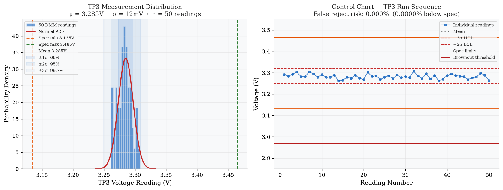
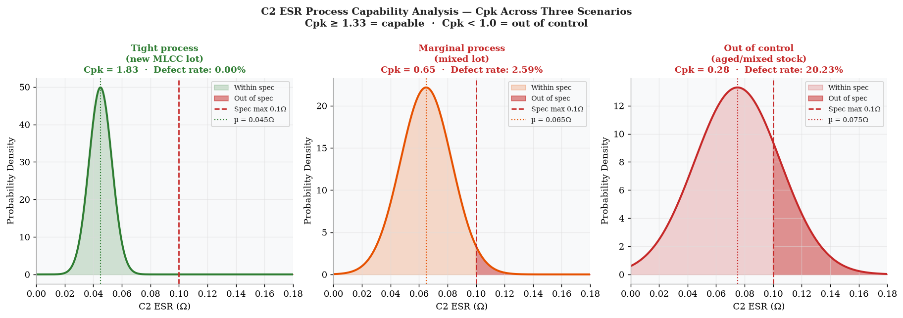
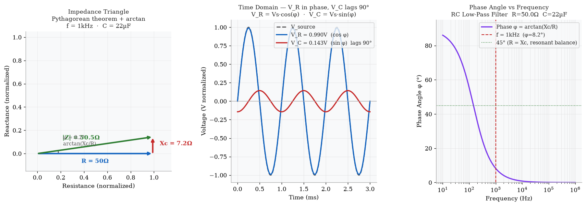
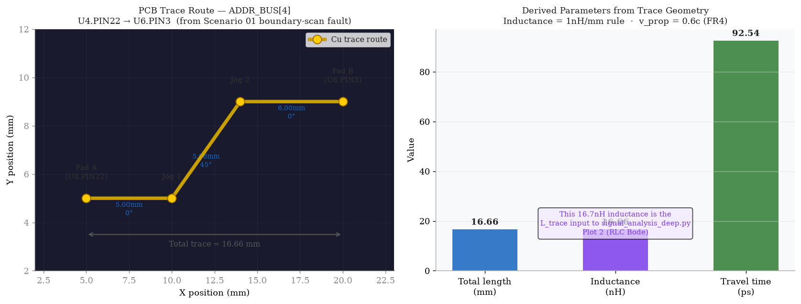

Why This File Exists
Job Knowledge RequirementThe EE I job description requires: "Ability to work with mathematical concepts such as probability and statistical inference, and fundamentals of plane and solid geometry and trigonometry." This file shows those aren't abstract qualifications — every one of them appears directly in the day-to-day EET bench and test engineering workflow you've already built.
Probability & Statistical Inference
Every DMM measurement has uncertainty — modeled as a normal distribution with σ. Test yield and process capability (Cpk) are how manufacturing tracks whether a component or process stays within spec across a board population, not just one unit.
Trigonometry & Geometry
AC circuit analysis runs entirely on sin, cos, and arctan — phasors, phase angles, impedance triangles. PCB trace routing uses the distance formula and 45° angle geometry to calculate trace length, which then drives inductance and signal timing.
cd Electrical_Electronic_Technician && python3 simulate_math_applied_01.py
— output goes to analysis_output/math_0*.png
1 — Measurement Uncertainty
Probability · Normal DistributionThe Concept
A DMM reading is never a single exact value. Every measurement has uncertainty — the true voltage is somewhere within a distribution of possible readings. That distribution follows the normal (Gaussian) curve, described by its mean µ and standard deviation σ.
68.3% of readings fall within µ ± 1σ
95.4% of readings fall within µ ± 2σ
99.7% of readings fall within µ ± 3σ ← "three-sigma rule"
Applied to TP3 (3.3V Rail Measurement)
50 repeated DMM readings of TP3. The rail is actually at 3.285V (slightly low but within the ±5% spec band of 3.135–3.465V). The spread of readings reveals the measurement system's uncertainty — important when setting test limits, because a tight spec combined with high measurement noise creates false rejects.

2 — Process Capability (Cpk)
Statistical Inference · Manufacturing QualityThe Concept
Cpk measures how well a manufacturing process keeps its output within spec limits. It combines the mean (centering) and standard deviation (spread) of a population into a single quality index. Industry standard target is Cpk ≥ 1.33.
Cpk ≥ 1.33 → capable process (target)
Cpk = 1.00 → 0.27% defect rate (2700 PPM)
Cpk < 1.00 → process not capable — too many out-of-spec units
Applied to C2 ESR Across a Board Population
Three scenarios model the same ESR spec (≤ 0.10Ω) with different component lot quality. A tight MLCC lot (Cpk 1.83) has near-zero defects. A mixed or aged lot (Cpk 0.28) delivers over 20% failing units — which is exactly why lot traceability and incoming inspection matter in a manufacturing environment.

3 — AC Phasor Analysis
Trigonometry · AC Circuit AnalysisThe Concept
Every AC circuit is a geometry problem in disguise. Resistance R and capacitive reactance Xc form two sides of a right triangle — the impedance |Z| is the hypotenuse (Pythagorean theorem), and the phase angle φ is found with arctan. Voltage and current waveforms are then expressed as sin and cos of that angle.
|Z| = √(R² + Xc²) ← Pythagorean theorem
φ = arctan(Xc / R) ← phase angle (trig)
V_R = Vs · cos(φ) ← resistor voltage
V_C = Vs · sin(φ) ← capacitor voltage (lags 90°)
Check: V_R² + V_C² = Vs² ← Pythagorean identity confirms the math
Applied to the 1kHz Rail Ripple (from FFT Analysis)
Using the same 1kHz ripple frequency identified by the FFT in analysis_eet.html Plot 3 — this shows the phasor relationship between the rail impedance components and how the phase angle is measured on a two-channel oscilloscope as the time offset between V and I waveforms.

4 — PCB Trace Geometry
Plane Geometry · Distance Formula · 45° RoutingThe Concept
PCB traces route at 0° and 45° angles between component pads. The exact length of each segment comes from the distance formula — plane geometry. That length then drives two engineering parameters: trace inductance (1nH per mm rule) and signal propagation time (trace length divided by the speed of light in FR4).
45° segment: L_45 = |Δx| · √2 ← when Δx = Δy
Trace inductance: L_nH ≈ L_mm × 1 nH/mm ← 1nH/mm rule
Travel time: t = L / v_prop ← v_prop = 0.6c in FR4
Total length = Σ all segment lengths ← sum of geometry
Applied to ADDR_BUS[4] — The Boundary-Scan Fault Net
This is the same net flagged as OPEN in the daily workflow boundary-scan fault report (U4.PIN22 → U6.PIN3). The geometry calculation gives us the trace inductance that feeds directly into the RLC Bode plot in analysis_eet.html Plot 2 — closing the loop between physical layout and electrical behavior.

CAD Notes
Altium Designer · OrCAD · Eagle · IPC-2221Altium — Trace Length Measurement
- Select a trace → Inspect → Measure gives exact segment lengths
- PCB Inspector → Net length field for the complete routed length
- Use measured length as input to the inductance and travel-time calculations above
- Verify 45° segments: Δx must equal Δy — Altium enforces this in Interactive Router
IPC-2221 — Width + Length Together
- IPC-2221 width formula sets the minimum width for current capacity
- Geometry model sets the maximum length for acceptable inductance
- Both constraints must be satisfied simultaneously on power nets
- Document both calculations in the design review — width from IPC-2221, length from √(Δx²+Δy²)
Cpk in a Manufacturing Context
- Cpk results feed directly into incoming inspection decisions
- Apriso / Camstar MES systems often capture component lot data — tie Cpk to lot number
- NCR process: if a board fails ESR, pull the component lot Cpk — if Cpk < 1.33, the lot is suspect, not just that one unit
- OrCAD BOM + lot traceability = complete statistical inference chain
Phase Angle — Scope Measurement
- Two-channel scope: Ch1 = voltage, Ch2 = current (via current probe or sense resistor)
- Measure time offset Δt between zero crossings → φ = (Δt / T) × 360°
- This is arctan math made visible on the oscilloscope display
- Power factor = cos(φ) — relevant for any AC power measurement on the board